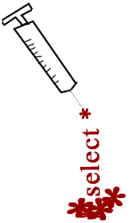

Casos no dia-a-dia(){
Dicas
Casos no dia-a-dia
O site G1, da globo publicou em 28/08/09 a seguinte notícia de golpes virtuais (acompanhe trechos)
Hacker norte-americano assume culpa por invasão e roubo de dados financeiros
Do G1, com informações da Associated Press
"O hacker Albert Gonzales, de 28 anos, assumiu nesta sexta-feira (28) a culpa pela invasão de sistemas e roubo de dados referentes a cartões de crédito, segundo documentos de um acordo apresentados em tribunal de Boston.
Gonzales era acusado de comandar um grupo para invasão de sistemas e roubo de informações, incluindo dados relativos a mais de 130 milhões de cartões de crédito e débito.
(...)
Golpes na web
Albert usava na web os nomes "segvec", "soupnazi" e "j4guar17" e era acusado, juntamente com outros dois hackers não identificados, de usar uma sofisticada técnica de invasão chamada "ataque de injeção SQL", para roubar informações sobre cartões de crédito e de débito.
Nesse tipo de ataque, o invasor se infiltra no banco de dados por meio de um problema nos sistemas que com ele interagem.
(...)
De acordo com o Departamento de Justiça dos EUA, este é o maior caso de violação de dados de cartões de crédito e de débito já levado a um tribunal norte-americano. "
(para ver o texto na íntegra, acesse o site da
globo.com)
Com isso vemos que uma solução é o tratamento dos valores antes da execução da query. Como vimos no exemplo de PHP, há casos em que a própria linguagem fornece diretivas para o tratamento de strings. Alguns frameworks que automatizam/encapsulam essa comunicação com o banco de dados também se protegem e fazem o tratamento devido dos dados.
Mesmo os meios de proteção já existindo automaticamente em alguns cenários, o intuito dessa matéria foi expor questões de segurança, as vezes desconhecidas, principalmente por quem está iniciando o desenvolvimento.
Outra dica importante é evitar a exibição das mensagens de erro em um servidor de aplicação em produção, pois geralmente nos erros ou alertas são exibidos caminhos de diretórios do sistema de arquivos e informações à respeito do esquema do banco de dados, podendo comprometer a segurança do sistema.

Cabe ao desenvolvedor estar atento às possíveis brechas de segurança existentes nos códigos fonte que produz, principalmente quando o que está em jogo é um bem de grande valia: a informação. Já diziam por ai: mais vale previnir do que remediar. Previnam-se, vacinem suas aplicações! E o mais importante: chequem regularmente o cartão de vacinas, ou seja, mantenha-se informado!
Referências
Hacker norte-americano assume culpa por invasão e roubo de dados financeiros.
Steve Friedl's Unixwiz.net Tech Tips - SQL Injection Attacks by Example.
Statement e SQL injection em Java.
SQL Injection no PHP: O que é e como se proteger.
}